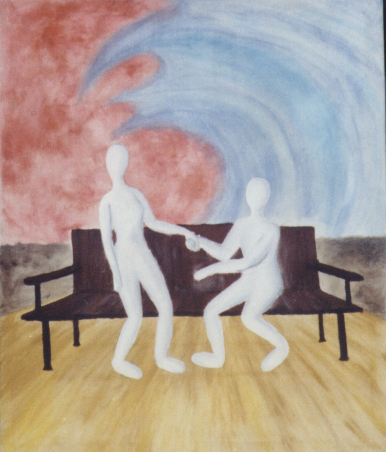

| The Second (of 6) | |
|  | The Conversation Begins
I should explain the blue and red (the red looks less pinky in real life). The little balls of colour in the first painting were meant to embody the emotions of the two individuals. When their emotions are revealed or inflamed they escape the balls. In this painting, his emotions are embodied by the blue 'wave' that attempts to wash over onto her, while her emotions are stagnant. His body language indicates that he wants her to sit. He pulls her in with one hand while he motions her to sit with the other. She, however, seems reluctant. Her body leans away from him. If she knows him so well, why is she wary? I feel this painting was poorly executed. The canvas itself was poorly prepared: it's loose on the frame and stains on the back indicate that I didn't prime it properly. Everything about it was rushed. |
I'd love to hear any of your thoughts or interpretations of my art.
If you have a collection of art works, I'd love to see it too.
email me